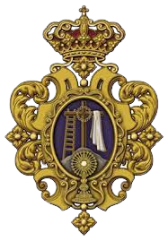

HERMANDAD DE SAN GIL

Hermandad Sacramental y Real Archicofradía de la Coronación de Espinas de Nuestro
Señor Jesucristo, Glorioso Señor San Marcos, Glorioso Señor San Roque, Santísimo
Cristo de la Salud, Nuestra Madre y Señora María Santísima de los Dolores, Sagrado
Corazón de Jesús y San Juan de Dios.
Paso de Coronación de Espinas de Nuestro Señor Jesucristo

La efigie gótica del Crucificado puede situarse a finales del gótico andaluz, en torno al año 1500, de autor anónimo. Fue restaurado en 1985 por Luis Álvarez Duarte.
Procesiona sobre paso de estilo neobarroco en madera de caoba en su color, iluminado por cuatro hachones, obra de Antonio Martín (1967). Los apliques y cartelas en plata de ley de Roncero de Córdoba y Manuel de los Ríos de Sevilla, el cual realizó los faroles que iluminan el canasto. En los faldones, broches bordados en oro por Ignacio Escobar.
CURIOSIDADES
Es el Cristo con más devoción de cuantas imágenes hay en Écija. Es por ello que es la Hermandad que cuenta con mayor número de nazarenos.
Nuestro Señor Jesucristo en su Coronación de Espinas porta 45 costaleros
Paso De el Santísimo Cristo de la Salud
El Titular de esta Hermandad es una obra maestra del imaginero sevillano Cayetano González en el año 1947. El paso de nuestro señor es de estilo barroco con talla de Antonio Martin, fue dorado por José Luis Asencio.
Fue restaurado por Francisco Fernández Enríquez en 1998. Posee una magnifica túnica bordada en oro fino del siglo XVIII realizada por Joaquín Ojeda. Porta potencias neobrarrocas de plata sobredorada, cincelada y repujada de Cayetano González
CURIOSIDADES
En su estación de penitencia, un penitente se encuentra detrás del paso con una cadena atada a los pies y por lo siguiente provoca el sonido mas significante de este Domingo De Ramos
El Santísimo Cristo de la Salud porta 35 costaleros

Paso De Nuestra Madre y Señora María Santísima de los Dolores

La talla de la Virgen de los Dolores está atribuida a José Montes de Oca, fechada a finales del siglo XVII. Luis Álvarez Duarte la restauró en 1985. Entre 2013 se vuelve a restaurar por parte Sergio Saldaña Jiménez.
Procesiona en paso de palio con orfebrería de Hijos de Juan Fernández. La corona es obra de Manuel de los Ríos; y su rico manto de terciopelo azul bordado en oro, de las hermanas Antúnez de Sevilla de 1882.El techo de palio bordado en oro es obra de Jesús Rosado Borja (2009).
CURIOSIDADES
Entre sus alhajas merece destacarse una corona, el corazón doloroso, la ráfaga-resplandor y una media luna de plata de ley hechos en Écija y fechado en 1723.
Nuestra Madre y Señora María Santísima de los Dolores porta 30 costaleros
- Sede : Parroquia de San Gil Abad
- Hermano Mayor : Luis José Navarro Rodríguez
- Web : http://www.hermandadsangil.es/
- Año de fundación : 1563
- Numero de nazarenos : 1500
-
Hábito : - túnica morada con botonadura blanca, fajín morado. Capa blanca con vueltas moradas y escudo de pasión sobre fondo morado bordado sobre el hombro izquierdo. Capirote corto cubierto por capillo morado con escudo de pasión bordado. Guantes negros. Paso Cristo
- túnica blanca con botonadura celeste, ceñida por fajín celeste. Capa blanca con vueltas celestes, y escudo de pasión sobre fondo celeste bordado sobre el hombro izquierdo. Capirorte corto cubierto por capillo celeste con escudo de pasión bordado. Guantes blancos. Paso Palio